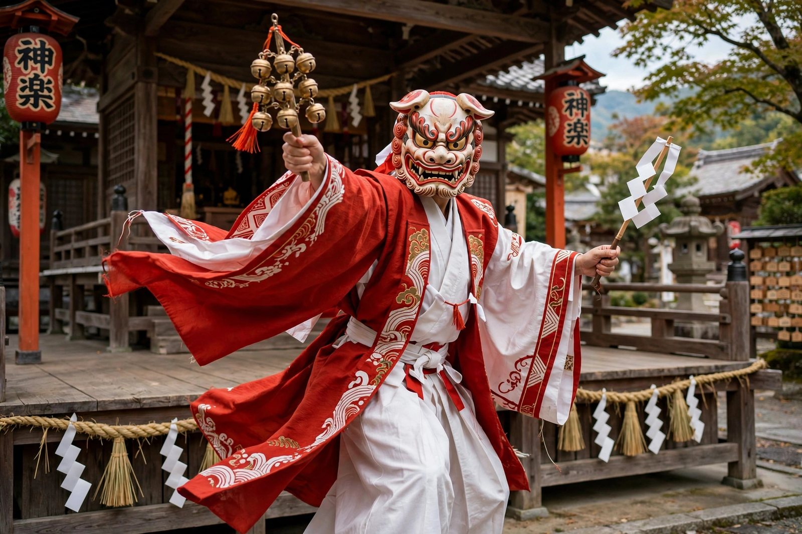

| Kagura | |
|---|---|
| Japanese | 神楽 ("god-entertainment") |
| Type | Shinto ceremonial dance and music |
| Mythic origin | Dance of Ame-no-Uzume before the Heavenly Rock Cave |
| Forms | Mikagura (court), satokagura (village), shishi kagura, daikagura |

Kagura (神楽, "god-entertainment") is a type of ceremonial dance and music in the Shinto tradition of Japan, performed to entertain and pacify the kami (gods) at shrines and at the Imperial Court. It is among the oldest surviving performing arts of Japan.
Kagura traces its origin to the myth of the Heavenly Rock Cave. When the sun goddess Amaterasu, angered by her brother Susanoo, hid herself in a cave in Takamagahara and plunged the world into darkness, the goddess Ame-no-Uzume performed a ribald dance on an overturned tub before the cave, provoking the assembled gods to laughter. Curious, Amaterasu peered out and was drawn forth, restoring light to the world. Uzume's dance is regarded as the first kagura, and kagura dancers are sometimes said to be possessed by the kami, as she was.
Dancers use props including bells (kagura suzu), fans, bamboo grass, and the paper-streamered wand gohei. The movements are slow, formal and circular in court kagura, while folk forms can be vigorous and theatrical.